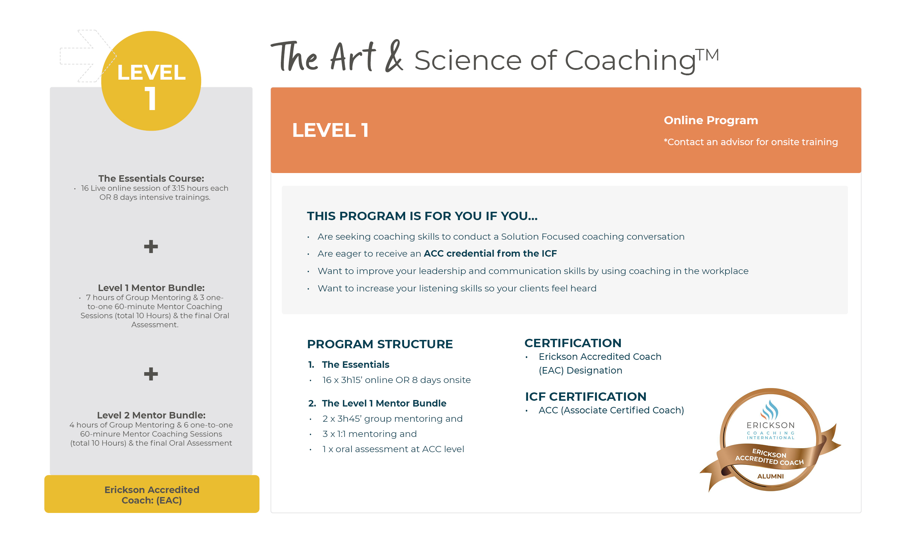

Download The Art & Science of Coaching Bangalore Brochure

ICF Accredited Coach Certification in Bangalore – The Art & Science of Coaching™ by Erickson is the most trusted and recognized coach training program in Bangalore. Become a certified life coach, executive coach, or leadership coach with India’s top ICF-accredited program, now available in Bangalore.
Train online, onsite in Bangalore, or in a hybrid format. Flexible schedules, fast-track options, and world-class faculty. Our Level 1 and Level 2 programs are based on neuroscientific principles and Erickson’s Solution-Focused methodology, empowering you to create transformative change as a professional coach in Bangalore and beyond.
Bangalore is India's technology and innovation hub, home to numerous startups and multinational companies — ideal for executive and leadership coaching careers.
Join a thriving community of professional coaches in Bangalore. Network with like-minded individuals and access local coaching opportunities in the city and surrounding regions.
Experience world-class onsite coaching training in modern Bangalore venues, combining convenience with Erickson's renowned Solution-Focused methodology.
Launch your coaching career in Bangalore's booming corporate and startup sectors. Specialize in life coaching, executive coaching, or leadership development with ICF accreditation.


The Art & Science of Coaching Bangalore program consists of two courses, The Essentials Course and The Advanced Course. Each course consists of two parts.
Skills and approaches organized around the core essential question: “What do you want?”
This covers the essential coach mindset, the elements that form a coaching relationship, Erickson’s Coach Position, and the step-by-step process of Erickson’s Coaching Arrow. In Part 1, the emphasis is shifting from problem-oriented to Solution-Focused.
Skills and approaches organized around the core essential question: “How might you accomplish it?”
This has an additional focus on implementation and execution of the desired outcome. This part provides an improved relationship with strategizing, planning, prioritizing, and using time effectively.